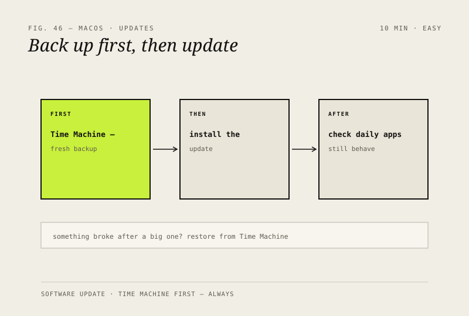

macOS · Mac · Security & backups
Keep macOS updated the safe way
Updates fix security holes and bugs — but back up first, so a bad update is never a disaster.

Before you start
Low risk. This change is reversible — you can return to the previous state without professional help or data loss.
Steps
- Apple menu → System Settings (or Preferences) → General → Software Update
- Before any major version: make a fresh Time Machine backup
- Install the update, then check that your daily apps still behave
- If something breaks after a big update, restore from Time Machine — you're covered
How to verify the fix
The update installs, your daily apps still behave, and a fresh Time Machine backup exists from before the update.
If this didn't fix it
Something breaks after a major update — restore from the pre-update Time Machine backup rather than reinstalling.
Next stop: the related fixes below, or start a guided diagnosis.